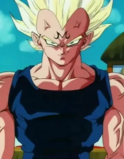

LearnMore
LearnMore
About
Vegeta (ベジータ Bejīta),recognized as Prince Vegeta is the prince of the fallen Saiyan race and the husband of Bulma, the father of Trunks and Bulla, the eldest son of King Vegeta, as well as one of the main characters of the Dragon Ball series.
Abilities
1.Super Saiyan
Though it was only a Saiyan Legend at the time, Vegeta was fascinated with this transformation and obsessed
over obtaining it so that he could cement his status as a warrior of could could cement his status as a
cement his status as a warrior of legend and the strongest in history.
Seeing Goku achieve this form first and used it to defeat Frieza only fueled his desire to unlock the potential hidden within him.

2. Majin Vegeta
Majin Vegeta more properly known as Demon Prince is a powered up form
taken on by Vegeta. Vegeta takes this form when Babidi harnesses the evil in Vegeta's heart to take control
of him,
giving him a significant boost in power, including maintaining his Super Saiyan form.While having the Demon
mark on
his forehead, dark black lines around the eyes, and increased muscle mass puff up to the level that veins
appear all over Vegeta's body and face.
"Because I wanted him to reawaken the evil in my heart.
I wanted him to return me to the way I was before! I was the perfect warrior! Cold
and ruthless! I lived by my strength alone, uninhibited by foolish emotion! But slowly...over the years...I became one of you, my quest for greatness gradually giving way to this life of mediocrity. I awoke one day to find that I had settled down, formed a family...I had even grown quite fond of them. Would you believe, I almost started to think the Earth was a nice place to live...? Do you understand now, Kakarot? That's why I needed Babidi to set me free. By releasing the evil in my heart, he has freed me of these petty attachments...and I'd have to say, it feels pretty good."
Personality:
Vegeta is arrogant throughout the series and becomes bitter due to the abuse his race suffered at the hands of Frieza.Following the destruction of his homeworld Planet Vegeta, his hatred toward Frieza grows. His royalty seems to have bestowed upon him an inflated sense of superiority, holding himself above nearly everyone he encounters.